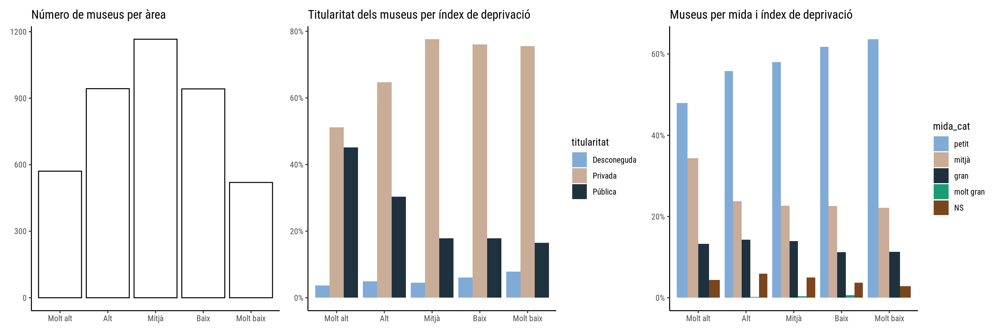

Show the code
# libraries
#| output: false
library(tidyverse)
library(tidytuesdayR)
library(knitr)
library(patchwork)
library(modthemes)
# get data
tt <- tidytuesdayR::tt_load(last_tuesday())[[1]]
Downloading file 1 of 1: `museums.csv`Marc Bosch
November 23, 2022
El Tidy Tuesday és una iniciativa on cada setmana es penja un conjunt de dades a Github i tothom en pot fer una visualització. Avui va de museus.
Downloading file 1 of 1: `museums.csv`La base de dades recull tot d’informació sobre els museus del Regne Unit: on són, quina mida tenen, de què van… Dedica diverses columnes a índexs de deprivació. Podem fer un retrat robot dels museus en cinc àrees segons índex de deprivació: molt baix, baix, mitjà, alt, molt alt.
p1 <- ggplot(tt,
aes(x = deprivation_index_quantiles)) +
geom_bar(colour = "black",
fill = NA) +
theme_classic(base_family = "Roboto condensed") +
labs(title = "Número de museus per àrea") +
theme(axis.title.x = element_blank(),
axis.title.y = element_blank())
proportions <- tt |>
mutate("titularitat" = str_extract(Governance,".*(?=\\-)")) |>
group_by(deprivation_index_quantiles) |>
summarise(n = n())
p2 <- tt |>
mutate(titularitat = str_extract(Governance,".*(?=\\-)")) |>
group_by(titularitat, deprivation_index_quantiles) |>
summarise(n_td = n()) |>
ungroup() |>
left_join(proportions, by = "deprivation_index_quantiles") |>
mutate(prop = n_td/n,
titularitat = case_when(titularitat == "Independent" ~ "Privada",
titularitat == "Government" ~ "Pública",
is.na(titularitat) ~ "Desconeguda")) |>
ggplot(aes(x = deprivation_index_quantiles,
y = prop,
fill = titularitat)) +
geom_bar(stat = "identity",
position = "dodge") +
scale_y_continuous(labels = scales::label_percent()) +
scale_fill_manual(values = modthemes::contrasting_palette) +
labs(title = "Titularitat dels museus per índex de deprivació") +
theme_classic(base_family = "Roboto condensed") +
theme(axis.title.x = element_blank(),
axis.title.y = element_blank())
p3 <- tt |>
mutate("mida_cat" = factor(Size,
levels = c("small", "medium", "large", "huge", "unknown"),
labels = c("petit", "mitjà", "gran", "molt gran", "NS"))) |>
group_by(deprivation_index_quantiles, mida_cat) |>
summarise(n_dt = n()) |>
ungroup() |>
left_join(proportions, by = "deprivation_index_quantiles") |>
mutate(prop = n_dt/n) |>
ggplot(aes(x = deprivation_index_quantiles,
y = prop,
fill = mida_cat)) +
geom_bar(stat = "identity",
position = "dodge") +
scale_y_continuous(labels = scales::label_percent()) +
scale_fill_manual(values = modthemes::contrasting_palette) +
labs(title = "Museus per mida i índex de deprivació") +
theme_classic(base_family = "Roboto condensed") +
theme(axis.title.x = element_blank(),
axis.title.y = element_blank())
p1 + p2 + p3
Les conclusions no són massa sorprenents. Les zones més deprimides tenen menys museus privats i petits, però també menys de molt grans. Seria interessant veure’n la qualitat però això serà un altre dia.